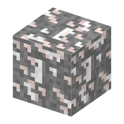

説明
①子ども 砂漠の地下深くにある塩の層。大むかし、ここは海だった。
②学生 蒸発岩の層。砂漠・荒野バイオームの地下（y0〜48）だけ、石を大きなレンズ状に置き換えて生成。軟らかい（モース硬度 2.5）のでどのツルハシでも岩塩が出る。シルクタッチならブロックのまま。
③大人 岩塩は「石になった海」。約2億5500万年前に干上がったツェヒシュタイン海は、北ヨーロッパの広い範囲の地下に塩を残した。
④ガチ 岩塩坑は乾いていて安定しているので、古い坑道を放射性廃棄物や公文書の保管に使う例もある。塩は熱をよく伝え、ゆっくり流れてひび割れを自分でふさぐ。
作り方
（作り方のレシピは無い：拾う・掘る・ほかの方法）
使い道
（このアイテムを使うレシピは無い）